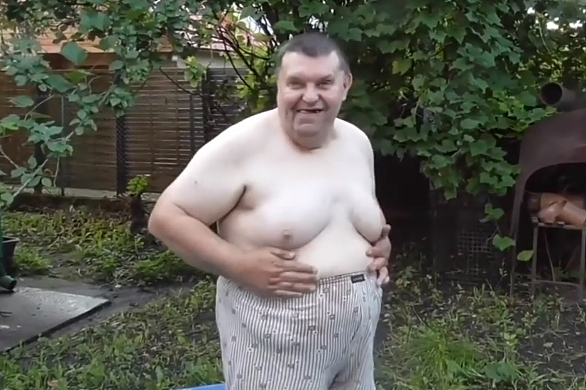

Krzysztof Kononowicz
(Kanał Youtube - Mleczny Człowiek)
Urodzony 21 stycznia 1963 w Kętrzynie - białostocki youtuber, polityk, aktywista i działacz społeczny, centralna postać Uniwersum Szkolnej 17.
Syn Bronisława i Leonardy Kononowicz.
Człowiek wielu talentów i umiejętności, z zawodu kierowca pojazdów osobowych, donosiciel, kaznodzieja, męczennik, moralizator, zdun i palacz, zwierzchnik białostockiej policji, drwal, adwokat, szef ochrony papieża Jana Pawła II, błogosławiony Kościoła Katolickiego, poseł na Sejm RP (od czasu do czasu również senator), potomek Józefa Piłsudskiego, kandydat na kandydata, członek „Solidarności” w latach 1990-2002, bohater i honorowy mieszkaniec Białegostoku i tak dalej, i tak dalej.
